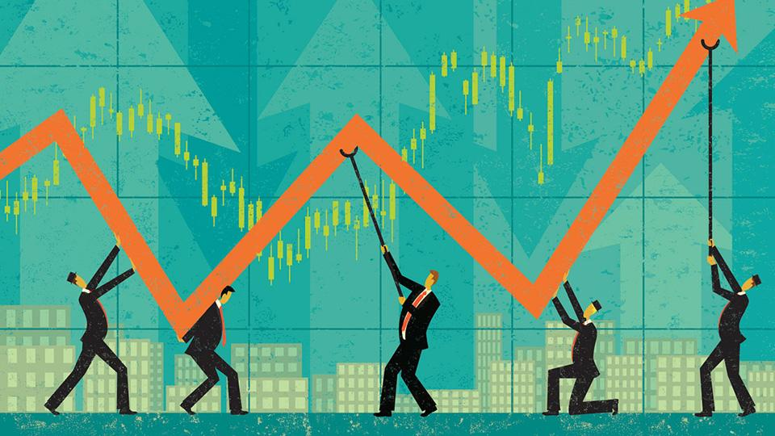

Year to date (YTD) refers to the period beginning the first day of the current calendar year or fiscal year up to the current date. YTD information is useful for analyzing business trends or comparing performance data, and the acronym often modifies concepts such as investment returns, earnings and net pay.
A 52-week high/low is the highest and lowest price that a stock has traded at during the previous year. Many traders and investors view the 52-week high or low as an important factor in determining a stock's current value and predicting future price movement.
Market Capital is the value of a company that is traded on the stock market, calculated by total number of shares * present share price.
Price Earnings (PE) ratio is the ratio of company's current share price to its earnings per share.